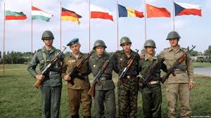

Historia
El Tratado de Amistad, Cooperación y Asistencia Mutua, concluido tras tres días de negociaciones en Varsovia, creó una contraparte militar oriental, aunque tardía, de la Organización del Tratado del Atlántico Norte (OTAN) de las potencias occidentales. En particular, fue una reacción a la independencia de Alemania Occidental y su ingreso en la OTAN. La delegación de la Unión Soviética en Varsovia estuvo encabezada por el primer ministro Nikolai Bulganin, junto con el ministro de Asuntos Exteriores Molotov y dos formidables militares: los mariscales Zhukov y Koniev. Los primeros ministros de Ucrania, Bielorrusia, Letonia, Lituania y Estonia también estuvieron presentes, junto con un general comunista chino como observador. El tratado fue debidamente firmado por la Unión Soviética y siete estados de Europa del Este: Albania, Bulgaria, Checoslovaquia, Alemania Oriental, Hungría, Polonia y Rumania, cuyos primeros ministros y ministros de Defensa asistieron a la conferencia. Yugoslavia estuvo notablemente ausente.
El objetivo principal del pacto era mantener la continuidad del imperio soviético y el control de los estados satélite, y la cláusula clave era la que otorgaba a Moscú el derecho a seguir manteniendo tropas estacionadas en dichos países. El tratado debía durar veinte años en una primera instancia o hasta que se alcanzara un pacto de seguridad aceptable entre Oriente y Occidente. Renovado en 1975 y nuevamente en 1985, preveía un mando militar unificado, inicialmente bajo el mando del mariscal Koniev, dominado por el Ejército Rojo y con su cuartel general en Moscú. Se estandarizó el armamento y se introdujeron manuales militares del Ejército Rojo, con entrenamiento conjunto, maniobras anuales y uniformes al estilo del Ejército Rojo. El tratado comprometía a los miembros a prestarse ayuda mutua inmediata en caso de ataque y a consultarse entre sí sobre cuestiones internacionales importantes relacionadas con sus intereses comunes. Existía un comité consultivo político integrado por los secretarios de los partidos comunistas de los miembros. Otros estados que declararan su disposición a colaborar con los esfuerzos de los Estados amantes de la paz para salvaguardar la paz y la seguridad de las naciones podían unirse. Ninguno lo hizo.
La continua presencia de tropas soviéticas en los países miembros exacerbó el descontento en Polonia y Hungría, donde se produjeron disturbios en 1956, pero permitió al régimen soviético reprimir la disidencia con mayor facilidad. En Polonia, Nikita Jruschov evitó la confrontación, pero no en Hungría, donde la determinación del gobierno de retirarse del Pacto fue respondida con violencia y en Budapest la población combatió a los tanques soviéticos a puño limpio. El tratado se invocó en 1968 cuando la Unión Soviética trasladó tropas del Pacto de Varsovia desde Polonia, Alemania Oriental, Hungría y Bulgaria a Checoslovaquia para recuperar el control del régimen en Praga. Curiosamente, fue en Praga, en una conferencia de representantes de los estados miembros restantes en julio de 1991, donde se declaró oficialmente muerto el Pacto de Varsovia.
